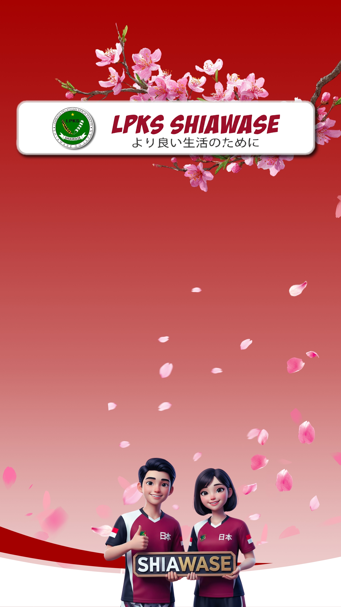
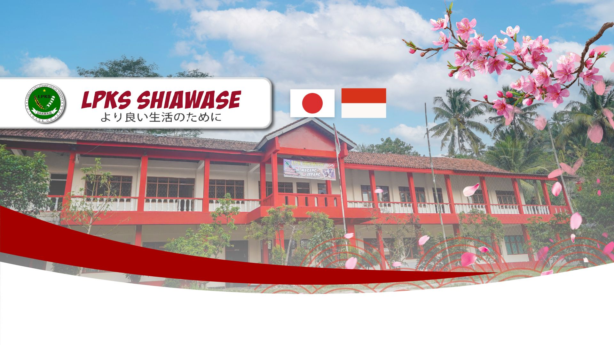
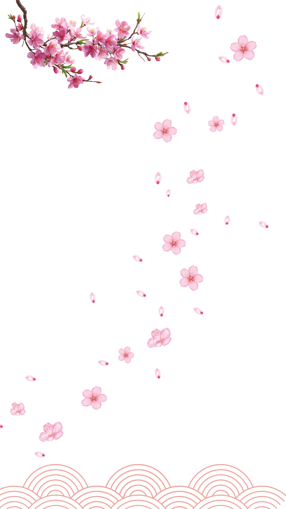
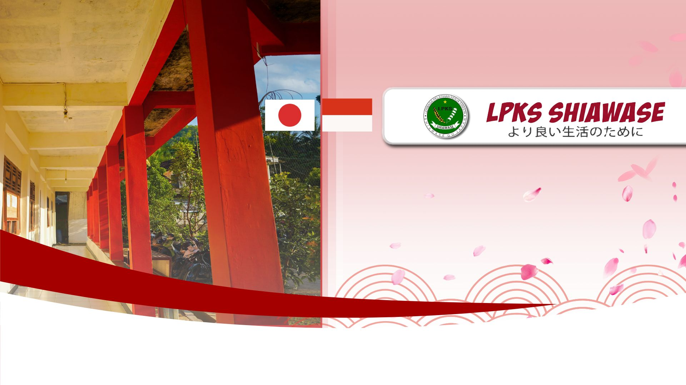

LPKS SHIAWASE
より良い生活のために




Lembaga Pelatihan Kerja dan Persiapan Magang Resmi ke Jepang.
Lihat PersyaratanMenjadi lembaga pelatihan kerja dan pengiriman pemagangan yang profesional, terpercaya, dan mencetak sumber daya manusia (SDM) yang unggul, disiplin, serta kompeten untuk bersaing di dunia kerja internasional, khususnya Jepang.
Izin Kemenaker RI
Akreditasi LPK
Izin Disnaker Setempat


LPKS SHIAWASE berdiri pada 14 Agustus 2018. Kami bergerak di bidang pendidikan dan pelatihan dengan tujuan menjadi jalan kesuksesan masyarakat untuk memperoleh lapangan pekerjaan baru dan meminimalisir pengangguran di wilayah Jawa Tengah, khususnya Kebumen.

3 Jalur Utama Pilihan Masa Depan di Jepang.

Program magang resmi jalur negeri maupun swasta (Sending Organization).

Program kerja bagi yang memiliki sertifikat keterampilan khusus.
Belajar di sekolah bahasa di Jepang sambil part-time.

Geser ke kanan untuk melihat berita terbaru.